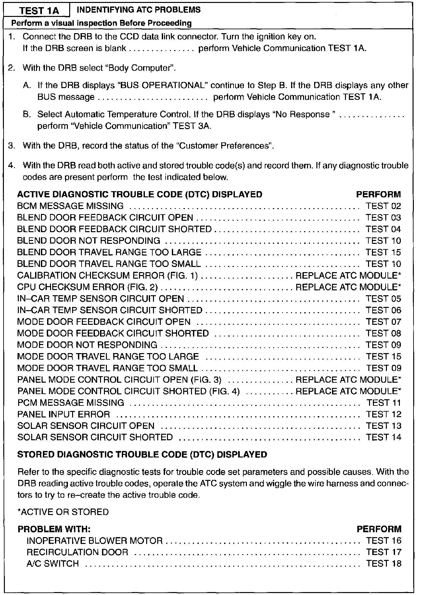

Operation CHARM
: Car repair manuals for everyone.
Русский
Home
>>
Jeep
>>
1997
>>
Grand Cherokee 4WD L6-4.0L VIN S
>>
Repair and Diagnosis
>>
A L L Diagnostic Trouble Codes ( DTC )
>>
Testing and Inspection
>>
Manufacturer Code Charts
>>
Heating and Air Conditioning
>>
1A Identifying Automatic Temperature Control (ATC) Problems
1A Identifying Automatic Temperature Control (ATC) Problems
